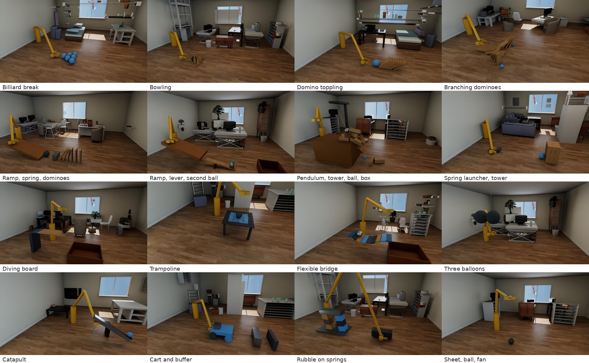
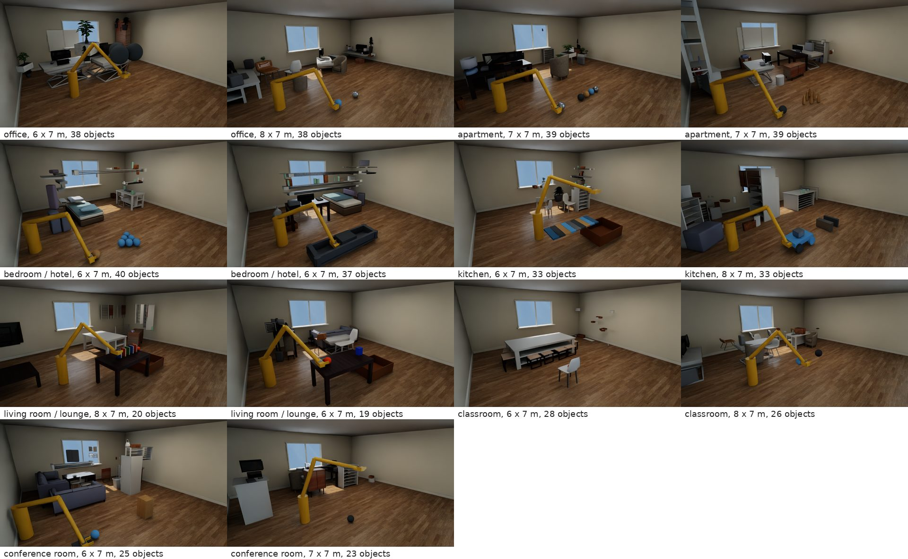

Forty-six indoor mechanics families in scanned rooms, each simulated as a bundle of counterfactuals, interventions and a control, with timed events and measured questions.
What does a world model need in its training data to learn causes, and not only motion?
The first dataset (the Dataset tab) taught the model to continue motion: one action, one rollout, three seconds. It rarely showed the same world twice with one thing changed, and never showed an action arriving in the middle of a rollout. Dataset V2 is built around those two gaps. Every root scene is simulated as up to eight branches from one manifest: the factual run, three counterfactual worlds (a property, a material, a shape), the removal of a causal link, two timed interventions after an observed prefix, and an unchanged replay. Every branch carries contact events with their impulses, frame tags, physics screens and questions whose answers are measured from the saved states. The motion families were widened to cover the mechanisms published physics datasets list, placed in whole scanned rooms, and driven by a visible actuator wherever one is physically sensible.
The audit of the first dataset (25 October) counted 1,367 paired scenes and 490,679 stored rollouts, all 3 s at 30 Hz, in procedural rooms. Only about 2.5 percent of its training action rows have a counterfactual sibling, and none has an intervention after an observed prefix. A model trained on it sees many motions but almost never the evidence that separates "what happens" from "what would have happened if". The published datasets have the same shape: breadth or scale on one axis, no branches from one world.
| Set | What it gives | What it lacks for a causal world model |
|---|---|---|
| Our first dataset (Dataset tab) | 490,679 rollouts, Physion and MOVi conversions, procedural indoor rooms, one action token per clip | Branches from one world (2.5 percent), interventions mid-rollout, events with evidence, realistic rooms |
| PhysInOne | 153,810 dynamic scenes, 71 phenomena (also optics and magnetism), 528 backgrounds, 13 views each | No counterfactual pairs or timed interventions; videos, not replayable states; views are not new physics |
| Sim2Reason | A simulator grades a reasoner's answers to physics questions (about 6,400 QA pairs per RL run) | QA only, no trajectory corpus; the simulator is a grader, not the thing being learned |
| Mundo | Box proxies for every object, MuJoCo moves them, a learned renderer draws the result (about 40,000 pairs) | Physics stays in the engine; nothing about branches or explanations |
| Physion, MOVi | Physion: 15,998 dynamics trials of eight scenario types, 5 to 10 s, in two environments; MOVi-A/B: about 19,000 clips of tossed objects, 2 s at 12 fps, with poses, velocities, masses and collision events. Together 3,745 converted rollouts pretrain our state models and start them 10 to 14 percent lower in validation error | No actions: every clip is a passive start (objects released with their recorded velocities, no actuator, no force schedule), so a world model can only pretrain on motion with the no-action token and never sees a cause it could condition on. No counterfactual or intervention branches: one rollout per scene. No rooms: a floor and a skybox, no furniture, supports or containers. Thin properties: MOVi has two materials (friction 0.4 or 0.8, restitution 0.3 or 0.7); the Physion records carry masses but placeholder friction and restitution. Short: under 3 s of valid states once converted, and only 12 percent of the objects move. No mechanisms: Physion's chain and cloth scenarios cannot be converted to rigid states; MOVi has none. No replay: other engines, so the visuals cannot be regenerated or re-simulated under a changed input |
| OneWorld (method, not data) | Different actions in one world should share the same latent mass and friction | Needs data that shows one world under several actions, which is what the bundle supplies |
The first dataset (Dataset tab) is large and mostly random: each of its scenes was simulated a few hundred times with one randomly drawn action at t = 0, and a template task was written for a few of them. The second dataset is small and authored: every root world is built around a mechanism that is meant to happen, and every action program is simulated as a bundle of branches from the same world. The table puts the two side by side; the census below measures, from the first dataset's own saved states, how many of its simulations show motion that the action caused.
| Aspect | First dataset (Dataset tab) | Second dataset (this page) |
|---|---|---|
| Worlds and simulations | 1,529 scenes, 588,505 simulations on disk; one action drawn at random per simulation, a few hundred per scene | 1,196 root worlds planned (520 in the first run, 676 in the second), each built around one of 52 motion families; 3 action programs per root, every program a bundle of branches: about 29,800 records |
| Why the simulation exists | Random actions inside a task's allowed action space, kept to qualify templated tasks; the task is the exception, the random rollout the rule | Each root is authored so that its chain happens (a push that topples the row, a plunger that launches the ball into the tower); the branches then answer what would have happened under a changed property, material, shape, floor, gravity, a removed body or an intervention mid-rollout |
| Motion caused by the action (census, this page) | Of 581,209 simulations with an action: 45 percent move at least one body other than the acted one by more than 2 cm, 47 percent move only the acted body (more than 5 cm), 3 percent nudge it by 1 to 5 cm, 5 percent move nothing by more than 1 cm; 1,529 simulations carry no action and the first dataset's own validity screen rejects 65,265 (11 percent). Its task writer's own qualification: random actions satisfied the task condition in 24,866 of 404,659 attempts (6.1 percent), and 8,686 of the 15,975 tasks (54 percent) were never satisfied by a random action | Every record passes the physics screens and a per-record validity label (first run: 100 percent of the audited records so far); the authored outcome is met in 573 of 733 programs relabelled at the halfway point (78 percent), and the misses are kept as labelled negatives. Three families whose chain never completed were traced to the density-derived mass of a struck body and to a fixed sheave acting as a capstan, and are repaired for the second run |
| Branches from one world | About 2.5 percent of training action rows have a counterfactual sibling; no intervention after an observed prefix | Every program: factual, property, material and shape counterfactuals, removal, early and late tool interventions, replay control; the second run adds floor friction, gravity, a paired property-plus-material edit and a timed removal mid-rollout |
| Cause of the motion | A velocity or impulse declared at t = 0 (place, drop, throw, push, spin, strike, swing, compress, poke, pull), no body applies it | A visible actuator with a force program (piston pushes, grasp holds and releases, pulls); declared launches only where the card says why (a spinning top, a scanned chair) |
| Rooms | Procedural rooms | 14 and then 49 further ScanNet++ rooms of seven types with their furniture; static clutter added after the run outside the motion envelope |
| Bodies and properties | Primitive shapes with per-family size ranges, mass, friction and restitution | Four material presets with density-consistent mass, thirteen shapes plus catalogue assets, 15 to 32 kg furniture, springs, hinges, prismatic guides, cables, nets, fields (gravity, drag, wind, buoyancy, thrust) |
| Duration and rate | 3 s at 30 Hz (91 frames), solver at 1920 Hz | 4 to 8 s per family at 120 Hz (481 to 961 frames), solver at 1920 Hz; see section 8 |
| What a record carries | States, touching pairs, contact episodes, an energy audit, task verdicts | States, contact episodes with impulses, events with evidence (contacts, topples, falls, rests, container entry and exit, the intervention, the property changes), frame tags, measured and comparative questions, the validity label, the scene with every physical property |
Census method: for every simulation the largest excursion of each body's origin from its frame-0 position over the 3 s; the acted body is the first entry of the action record. 105,959 simulations move exactly one other body, 119,629 move three or more. Script scripts/visual_pilot/dataset_v1_motion_stats.py, output datasets/dataset_v1_motion_stats_v1/; the task figures aggregate the qual field of every task file.
A root is one manifest: the room, the objects with mass, friction, restitution, colliders and materials, the joints and springs, the fields (gravity, drag, wind, buoyancy, thrust) and the actuator's force program. The eight branches are fresh PhysX runs from edited copies of that manifest; nothing is spliced, teleported or driven to a wanted outcome. Each branch exists for a reason and comes with the check that proves it did what it claims.
The registry has six groups. Collisions and motion (13 families) and mechanisms (13) cover the single-stage mechanics of Physion, MOVi and the mechanical half of PhysInOne's phenomenon list: drops that bounce, billiard breaks, bowling, ramps, slipping to rolling, spinning tops, pendulums (simple, double, rigid rod), springs, pulleys, levers, cranks, catapults, carts. Chain reactions (13) are the new emphasis: multi-stage causal chains such as ramp to spring bumper to dominoes, a spring launcher into a tower, a pendulum that fells a tower whose blocks push a ball into a box, a seesaw that launches a second ball, branching domino networks. Flexible solids (3: trampoline net, diving board on hinges with angular springs, flexible bridge) are coarse elastic assemblies that prepare the format for real deformables. Fields and air (5) add buoyant balloons, a falling sheet with drag and a fan, thrust, changed gravity and an orbit.

| Group | Families (horizon in s; actuator: piston, grasp or declared) |
|---|---|
| Collisions and motion (13) | drop, bouncing rubber ball (4, grasp); ball collisions (4, piston); billiard break (6, piston); bowling (5, piston); granular solids (6, grasp); rolling tires collide (5, declared); projectile (5, declared); ramp (5, grasp); pushed sliding block (4, piston); slipping to rolling (5, grasp); spinning blocks (4, grasp); spinning top (8, declared) |
| Mechanisms (13) | cart into a spring buffer (6, piston); spring catapult with trigger pin (5, piston); coupled springs (8, grasp); crank (6, grasp); double pendulum (8, declared); guided slider (4, piston); lever flipping a ball (5, piston); simple pendulum (8, grasp); pendulum into a spring-mounted block (8, grasp); pulley (6, declared); hanging chain (8, grasp); rotating beam (6, grasp); hanging spring (8, grasp) |
| Chain reactions (13) | ball and block fall into a box (5, piston); books knock a ball into a box (5, piston); collision chain (5, piston); chair topples and drops a ball (5, declared); ball to ball to box (5, grasp); branching dominoes (6, piston); spring launcher knocks a tower (6, grasp); pendulum strikes a stack (6, declared); pendulum, tower, ball, box (7, grasp); ramp, lever, second ball (6, grasp); ramp, spring bumper, dominoes (6, grasp); rubble onto a spring platform (4, grasp); domino toppling (5, piston) |
| Flexible solids (3) | diving board flicks a ball into a box (6, grasp); ball strikes a flexible bridge (6, grasp); ball on a trampoline net (5, grasp) |
| Fields and air (5) | three tethered balloons (6, grasp); sheet falls onto a ball, fan later (6, grasp); changing gravity (6, grasp); orbital motion (8, grasp); thrust-driven motion (6, grasp) |
| Heavy furniture (6, added 30 October) | chair thrown onto a table (5, declared); table tipped over, items slide off (5, declared); chair pushed into a table (5, piston); cabinet tips and sheds what it carries (5, declared); heavy chair knocks a row of light chairs over (6, piston); heavy crate dropped onto a table (5, declared) |
Five earlier families were merged into these because they duplicated physics: a single rolling wheel into the tire collision, a dropped ball into a box into the table-edge chain, pendulum into dominoes into pendulum into a stack, ramp into dominoes into the ramp, spring and domino chain, and a piston poke into the pushed block. The dashboard credits the merged family in each case. Nine others were redefined so that something happens after the action (the cart now meets a buffer, the catapult is cocked and released by a pin, the lever is a real lever, the billiard break has a six-ball rack, the drop bounces, three balloons instead of one, the sheet lands on a ball, the rubble collapses onto springs, the bridge ball rolls off into a box).
The factual branch of every family from the review page, one clip each (interior camera, the whole horizon at 30 frames per second, 640 px). The clips play on hover or click; each group is folded. The yellow arm is the actuator's visual, the grey block its tool. The pendulum, tower, ball and box chain and the launcher are the fix8 renders.
Falling and bouncing · 4 s · gripper
Ball collisions · 4 s · piston push
Bowling · 5 s · piston push
Billiard break · 6 s · piston push
Pushed sliding block · 4 s · piston push
Rolling down a ramp · 5 s · gripper
Spinning blocks · 4 s · gripper
Slipping to rolling · 5 s · gripper
Spinning tops · 8 s · declared: a 40 rad/s spin cannot be given by the pilot gripper
Rolling wheels and tires collide · 5 s · declared: two rolling tires launched toward each other
Granular solids · 6 s · gripper
Projectile flight · 5 s · declared: launched at a declared velocity (v11)
Collision chains · 5 s · piston push
Domino toppling · 5 s · piston push
Ball-to-ball-to-box interactions · 5 s · gripper
Rubble on a spring platform · 4 s · gripper
Pendulum strikes a stack · 6 s · declared: rigid-rod pendulum released from rest (v13)
Books knock a ball into a floor box · 5 s · piston push
Falling into a container: ball and block fall from a table · 5 s · piston push
Chair topples and drops a ball · 5 s · declared: the chair collider is a convex hull of a scanned mesh; a push force cannot be set a priori
Ramp, spring bumper and dominoes · 6 s · gripper
Spring launcher knocks a tower down · 6 s · gripper
Pendulum, tower, ball and box · 7 s · gripper
Ramp ball flips a lever that launches a second ball · 6 s · gripper
Branching domino network · 6 s · piston push
Simple pendulums · 8 s · gripper
Double pendulums · 8 s · declared: the lower bob swings from a declared velocity
Hanging springs · 8 s · gripper
Coupled springs · 8 s · gripper
Pulleys · 6 s · declared: the guided loads start from rest; the articulated cable has no free face to grasp
Levers · 5 s · piston push
Guided sliders · 4 s · piston push
Rotating beams · 6 s · gripper
Carts carrying objects · 6 s · piston push
Catapults · 5 s · piston push
Crank mechanisms · 6 s · gripper
Hanging chains · 8 s · gripper
Pendulum strikes a spring-mounted block · 8 s · gripper
Changing gravity · 6 s · gripper
Orbital motion · 8 s · gripper
Thrust-driven motion · 6 s · gripper
Air drag: a sheet falls onto a ball · 6 s · gripper
Buoyancy: three balloons · 6 s · gripper
Ball strikes a flexible bridge · 6 s · gripper
Ball on a trampoline net · 5 s · gripper
Flexible diving board flicks a ball into a box · 6 s · gripper
Chair thrown onto a table · 5 s · declared throw, 15 kg chair
Heavy crate dropped onto a table · 5 s · declared release, 15 kg crate
Table tipped over, items slide off · 5 s · declared tip, 24 kg table
Chair pushed into a table · 5 s · piston at 180 N, 22 kg armchair
Cabinet tips and sheds what it carries · 5 s · declared tip, 32 kg cabinet
Heavy chair knocks a row of light chairs over · 6 s · piston at 180 N, 15 kg chair into two 5 kg chairs
Most round-2 objects are spheres and boxes (books, dominoes and tower blocks are boxes; pins and pegs are cylinders), and the shape counterfactual swapped between those. The stage exporter already simulates convex hulls, capsules and cylinders exactly, so on 30 October thirteen equal-volume shapes were added to the swap vocabulary, each with a motion of its own: a cone (tips on a nudge, rolls in a circle on its side), a lying capsule (rolls across one axis only), a puck (slides, almost never rolls), a wedge (slides on its flat face, tips over its edge), hexagonal and triangular prisms (roll in jerks), a pyramid, an L block (off-centre mass, asymmetric toppling), a dumbbell (rolls about one axis, rocks about the other), a standing ring (rolls and wobbles, can trap a ball), a bottle (tips, rolls when down), a mug and a bowl (hollow vessels of 13 to 16 convex parts that can catch a small ball). The scaled run draws the actor's shape from this pool in a share of the roots, and a root whose actor is a vocabulary shape gets the family's plain shape as its counterfactual. The one-GPU pilot now queued is their first simulation; the co-author's sixty procedural assets (mugs, bottles, traffic cones, bowling pins, skittles) can enter the same slot once their part lists are scaled to the slot's volume.
The moving bodies of the 46 light families weigh 0.05 to 7 kg. The furniture of a digital twin (a scanned room with its chairs, tables and cabinets) weighs 10 to 90 kg, and mass scales both the momentum an object carries and the force needed to move it, so a model trained only on light objects would be extrapolating as soon as it meets a twin. On 30 October six families were added whose moving bodies are ReplicaCAD furniture meshes placed in the foreground of the scanned rooms, with their convex-decomposition colliders and their textures: a 15 kg chair, a 22 kg armchair, 18 and 24 kg tables, a 32 kg cabinet. Throws and tips are declared actions (a launch velocity or a tipping rate stated in the record), because a hand-sized gripper flinging a chair is not a cause a learner should see; pushes keep the piston at a realistic 180 N.
| Family | Cause | What the branches change | Pilot result |
|---|---|---|---|
| Chair thrown onto a table | a 15 kg chair launched at 3.5 m/s forward and 2 m/s up from 0.6 m, lands on an 18 kg table and tumbles across it | chair mass x2, chair friction, table removed (the chair lands on the floor), impulses on the chair in flight | passes |
| Table tipped over, items slide off | a 24 kg table starts rotating about its long edge at 3 rad/s with a cup and a book on top | table mass x2, cup material, cup removed, a sideways impulse that can stop the tip | passes (the book reaches the floor, the cup lands on the fallen table) |
| Chair pushed into a table | the piston pushes a 22 kg armchair with 180 N for 0.4 s into an 18 kg table | table mass x0.5, chair friction, table removed, a braking impulse | passes after the push was lowered from 250 N, which sank the piston 7 mm into the scanned collider |
| Cabinet tips and sheds what it carries | a 32 kg cabinet starts tipping at 2.8 rad/s with two books and a vase on top | cabinet mass x0.5, book material, one book removed, an impulse that can stop the tip | passes (the vase reaches the floor, the books stay on the fallen cabinet) |
| Heavy chair knocks a row of light chairs over | the piston tips a 15 kg chair at the top of its back onto two 4 kg chairs 0.7 m apart | second chair mass x4 (as heavy as the first), chair friction, second chair removed, a braking impulse | passes; in two earlier runs with three equal 15 kg chairs the second one slid 0.3 m and leaned 12 degrees instead of falling, so equal heavy chairs do not domino |
| Heavy crate dropped onto a table | a 15 kg wooden crate released 0.56 m above a 24 kg table with a cup on it | crate mass x0.3, crate material, a cylindrical crate, table removed, a sideways impulse in the fall | passes |
Pilot history: the first two runs failed on how the stage writer names the furniture's visual file (fixed), the third simulated all 43 branches and passed 2 of 6 families, the fourth passed 3 more after the fixes listed above, the fifth redefined the chair row. Next: the room's own ScanNet++ furniture as moving bodies (needs per-object masses and colliders from the twins pipeline), and a size knob plus density-consistent masses for the light families (section 9).
34 of the 52 families have a slot: the one object whose shape the recipe allows to change (usually the moving actor). Each slot was checked against the 16 shapes of 3c and the 73 movable procedural assets of the co-author's catalog (balls, cans, bottles, pins, cones, blocks, prisms, dumbbells, rings, mugs, bowls, trays, planks, and so on), each scaled to the slot's volume with the slot's mass and material kept. A candidate is geometrically applicable when the tool reseats on it, the scene stays in its zone, nothing overlaps at the start and every branch of the bundle still builds. The dynamic tier then simulated one factual run per accepted pair (2,056 runs, then 630 re-runs of twelve families after the sweep itself exposed three seating defects in the swap code: a gripper re-seated after a swap of a different object, hanging bodies swapped by their bottom instead of their centre, an axis-aligned gripper on a slope-aligned payload) and labelled whether the family's motion still happens. The production run samples the slot from the resulting per-family pool: weight 1 when the motion survives, a low weight when it does not, so that draws which break a chain remain in the data as labelled negatives, and negatives together take at most 20 percent of a family's draws.
| Geometric tier (34 slots x 89 candidates) | Result |
|---|---|
| Families accepting every shape and 51 to 54 assets | 23 (drops, pushes, collisions, pendulums, springs, levers, bridge, trampoline, chains with a free ball) |
| Families accepting 3 shapes and 10 or 11 assets | the three ramp families and the spinning block: a low or lying shape held on a tilted ramp puts the gripper into the ramp |
| Families losing a few candidates | catapult, launcher, branching dominoes, pendulum and spring |
| Rejections | 290 of 3,026 placements, all start-up overlaps; balls fit every slot, pipes, planks, benches, flat books, bricks and trays the fewest |
| Dynamic tier | 2,686 runs on 4 L40S with 3 processes each, no engine failure; 1,961 candidates physically valid, 1,710 keep the family's motion (362 shape and 1,348 asset placements), 251 valid negatives, 95 excluded (geometry that does not fit the rig, mostly on the catapult arm, or a failed screen) |
| Shapes that keep the motion | Families | Reading |
|---|---|---|
| 15 (and 47 to 54 assets) | coupled springs, wind drag, elastic bridge, changing gravity, lever, rotating beams, spring, pendulum, projectile, double pendulum, granular, pendulum with tower and box | the motion is about the cause, not the body's shape |
| 11 to 14 | sliding, ball and block catch, trampoline, books and ball catch, carrying cart, drop, chair spill, orbital, bowling, collision chains, ball collisions, toppling | a few shapes behave differently for a physical reason: a wedge does not slide, a bowl or a puck does not roll into the pins, a cone does not tip |
| 5 to 8 | pendulum with spring 8, catapult 6, composite 5 | the slot sits on an arm or must reach a target: long or flat shapes miss |
| 2 | ramp with lever, spinning block | only round or tall-symmetric bodies roll off the ramp or spin |
| 1 | diving board (26 assets), launcher with tower (13 assets), branching dominoes (8 assets) | the slot object defines the chain; with the parallel-arm fix the dominoes rose from 1 of 40 to 9 of 40 candidates |
| 0 (10 round assets) | ramp, ramp with spring and dominoes | a cube or an upright cylinder does not slide on the 16-degree slope; balls roll |
Thirty-nine of the 46 light families are set in motion by a visible tool: a piston that pushes, or a gripper that holds an object and releases it, with a force program (start, stop, release time, force or torque). What the engine simulates is the tool alone, a single rigid box with a known force schedule; the yellow arm in the renders is drawn, not simulated, and the tool is held kinematically after release. The seven remaining families (top, two tires, pulley loads, rigid-rod pendulum, double pendulum, projectile, scanned chair) start from a declared launch and say so on their card.
Every engine run stores, besides the 120 Hz states, the contact episodes with their impulses at solver resolution (which pair, first contact, peak impulse and where), and a timed event list: comes to rest, topples, container entry and exit, intervention and release markers, gravity and fan changes, rebound and spring compression peaks. The same run passes the physics screens (penetration at most 5 mm, energy gain bounded by the recorded external work, inside the room, unit quaternions) and the family's expectation: the actor moves, the declared pairs touch, the stated stages touch in order, the tower tips, the ball ends inside the box. The branch checks of section 2 run on top. A failed check stays in the record as a valid negative and is shown on the dashboard, never silently dropped.
Each family declares which question kinds apply: count and order of toppled objects, first tip time, ends inside, rebound height, bounce count, travel distance, greatest height, time to rest, spring compression, oscillation count, maximum rotation, contact order, direction after impact, spread, plus mass, energy, speed and contact time. The answer to each is measured from the saved states and contact reports of that run and shown with its evidence frames. The factual record also carries comparative questions across the bundle ("if the material were rubber, does the ball travel more, less or about the same?"), answered from the two saved runs. Qwen (a 27B checkpoint, run locally) is used for wording only: it rewords measured questions in natural language and may propose a typed question whose answer the simulator then measures. On the round-2 scenes it returned 83 valid rewordings and 26 proposals, 25 of a valid type; nothing numerical ever comes from the language model.
Each family runs in one of fourteen whole ScanNet++ training rooms, two per type (office, apartment, bedroom, kitchen, living room, classroom, conference room). The scanned layout is transferred rigidly behind a reserved foreground zone; furniture is fitted with ReplicaCAD assets, small items are seated on the furniture below them, whiteboards and screens hang on the nearest wall, and anything that would enter the zone or leave the shell is dropped. The rooms keep 19 to 40 objects each, all with static colliders. The camera stays inside the room, below the ceiling, and walks forward to the closest distance that frames the recorded motion.

Horizons are set per family from measured time to rest and last task event over every branch: 4 s for drops, sliding and spinning, 5 to 6 s for most, 7 s for the pendulum, tower and box chain, 8 s for pendulums, springs, chains and orbits. Nothing runs longer than 8 s, and no branch has an event after its horizon. The solver steps at 1920 Hz and states are saved at 120 Hz: subsampling the same runs to 30 Hz moved the stored position up to 7.5 cm around impacts in 14 families, 60 Hz up to 3.1 cm.
Why 120 Hz and not the first dataset's 30 Hz. At 30 Hz a body at 3 m/s moves 10 cm between frames, more than most of our objects are long, so an impact falls between two frames: the pre-impact and post-impact states are a frame apart with the contact unobserved, the position jumps and the velocity flips within one step, and a model has to infer the collision from positions alone. At 120 Hz the same body moves 2.5 cm per frame and the impact is bracketed within 8 ms. The measurement above (7.5 cm of stored displacement around impacts at 30 Hz, 3.1 cm at 60 Hz, in 14 families) is the same effect on our own runs. The rate is also what a learned replacement for a game's physics engine would need: engines step their physics at a fixed 50 to 120 Hz, independently of the frame rate at which they render, and the renderer interpolates between physics states. Interpolation is only valid between two states that do not straddle a contact, which is why engines step fast or substep around collisions, and why a learned stepper has to run at the engine's rate rather than the display's. States saved at 120 Hz train and test steppers at 120, 60, 40 or 30 Hz by taking every n-th frame, and let the timing of an impact be checked to 8 ms; 30 Hz states cannot be upsampled without inventing the dynamics in between. The data rate is the ceiling; the model's own step is a design choice below it, since a 120 Hz autoregressive model takes four times the steps per second of a 30 Hz one and compounds its error accordingly.
Why the ground truth is checked at all. PhysX is an iterative solver with a fixed iteration budget, not an exact one. Under a hard impact or a stiff piston it can leave two bodies overlapping (the actuator pushed into a chair or into the bowling ball, visible in the clips), stretch a rope past its length, or create energy at a joint. A record with such a solver artefact is not physics a model should learn, however plausible the rest of the clip looks, so every record passes the screens below before it can be used; the thresholds are the ones the run's contract froze.
| Rule | Threshold | Why | First run |
|---|---|---|---|
| Interpenetration | the deepest contact within 5 mm or 3 percent of the smaller body's largest extent, never more than 15 mm | bodies passing through each other is the solver giving up; the allowance grows with size because a large fast body legitimately goes a few millimetres deep at 1,920 Hz | 109 fail |
| Energy | kinetic plus potential (at the centre of mass) plus spring energy may grow by at most 15 percent of the initial kinetic energy, plus 0.03 J, plus 0.005 g per kilogram of mass, plus the declared external work; after a mid-rollout removal the budget restarts on the remaining bodies | energy from nowhere is a constraint-solver artefact (seen on levers lifting a heavy cargo) | 7 fail |
| Constraints | every rope link within 2 mm or 1 percent of its rest length, guides within 1 mm and 1 degree, anchors within 2 mm, at the authored start pose and over the rollout | a rope that stretches or a guide that drifts means the rig, not physics, decided the motion | 17 fail |
| World and numbers | no body below the floor or outside the room, every state finite, every quaternion of unit length | a body that fell through the floor or a non-finite state is a broken run | 0 fail |
| Replay control and prefix | the control branch replays the factual run within 1e-5 m; every intervention branch matches its factual record before the intervention time within 1e-5 m | proves the engine is deterministic and that branches differ only by the declared edit | 52 of 52; 3,110 of 3,110 |
| Expectation label (not a rejection) | the family's designed motion: the actor or load moves 0.1 to 1 m, rotates 10 to 150 degrees, tips, touches the right body, rebounds or completes its stages, each with the family's own limit | says whether the designed mechanism happened; a valid run in which it did not is still physics and keeps its label | 1,235 of 1,555 met |
Tiers of the census, computed over the saved states of every record (negatives_v5 next to the audit; exclude_ids.txt and flagged_ids.txt are the loader's inputs). Foreground means every dynamic body except the actuated tool, so a piston moving on its own does not count as motion.
| Tier | Definition | Records | Decision |
|---|---|---|---|
| Invalid | a screen above failed | 133 | excluded: the solver's output is wrong |
| Unlabelled | the action had an aborted sibling branch (the orbital singularity), so no validity label was written | 9 | excluded until labelled |
| Still | no foreground body moved 1 cm over the whole record: 48 shape counterfactuals that put a cube on a ramp (it does not roll), 10 topple counterfactuals whose doubled mass or rubber stops the tip, 63 stuck rigs (pulley, lever, sliding) | 121 | excluded: a clip in which nothing happens teaches nothing about dynamics, whatever the reason |
| Still after a removal | a removal branch in which nothing moved once the removed body was gone | 90 | kept: without the only mover there are no dynamics, and a model should learn that |
| Actuator only | the family's actor or load did not move (its moves check failed) although the tool or another body did | 603 | flagged and being replaced: all are the first run's stuck rigs (pulley, ball_block_catch, pendulum_spring, lever) |
| Off expectation | valid physics in which the family's outcome did not happen (stages, tipping, contacts, rebounds) | 1,399 | kept with the label: a push that fails to topple the cabinet is real physics |
| Passed | everything above | 7,656 | kept |
What went wrong in the three stuck families, and the guard against a repeat. The pulley's sheave was a static drum, so the cable had to slide over a fixed cylinder with friction, a capstan that the randomized loads (0.30 to 0.50 kg against a 0.30 kg counterweight) never overcame: every program moved 3 to 11 mm and stopped. ball_block_catch and launcher_tower gave the body downstream of the tool 13 to 42 times its authored mass through the density knob, so the ball stopped dead on the block and the plunger's ball fell short of the tower. The second run's code gives the sheave a frictionless axle, caps a downstream body at three times its authored mass and sizes the push for it; its pilot met all three families two of two. The 30 first-run roots of these families (603 records) are superseded: a replacement plan with the repaired code (10 roots per family at seeds r23 to r32, 926 records) is queued into the same directory as shard 20, and the progress page now carries a family-health banner that names any family whose first six or more labelled actions miss the expectation in more than three cases out of four; on the first run's data it names exactly the five families the census found, three of them within their first roots.
Post-hoc additions on every record: static floor clutter drawn outside the recorded motion for 1,530 of 1,560 actions (28,464 pieces at one per square metre of free strip floor, 0.25 m clearance; 30 granular actions have no free floor), and event ledgers with template explanations for all 10,011 records (7,594 training-eligible by the writer's rule). The 20k extension (13 more roots per family, the new rooms, the four branch kinds) was launched the same day into the same directory as shards 10 to 19 with roots r10 to r22, at most six GPUs at once, memory-bounded worker lives and a progress page that names a stalled shard.
| Check | Result |
|---|---|
| Physics screens (penetration, energy, bounds, quaternions) | 341 of 342 round-2 runs; 16 of 16 fix8 runs |
| Family expectation and motion checks | 52 of 52 families (44 on the round-2 roots, two on the fix8 roots, six heavy-furniture families on their pilot roots) |
| Control replays exactly; intervention prefixes identical | 46 of 46 |
| Chains with every stage touching in order | 19 of 19 |
| Randomized variants, geometry pre-flight | 46 families x 20 seeds, all accepted |
| Randomized variants, simulated (6 families x 3 seeds) | 18 of 18 pass the physics screens; 13 of 18 also reach the family's expected outcome (see below) |
| Scaled runner pilot (39 roots, 2 actions, 4 branches, 3 processes per GPU) | 244 of 244 screens, 38 of 38 controls exact, 76 of 76 prefixes identical, expectation met 68 of 76 |
| Shape and asset sweep (34 slot families x 89 candidates) | 2,686 runs, no engine failure; 1,961 candidates valid, 1,710 keep the family's motion; three swap defects found by the sweep and fixed |
| Independent review of the scale-up code (31 October) | 12 findings, 11 fixed the same day with tests (64 CPU tests pass), 1 deferred by design |
| Second review of the fixed code (31 October evening) | 3 findings and 4 smaller items, plus one defect found in the pilot's records, all fixed the same evening with tests (74 CPU tests pass); the production plan dry-run on the fixed code: 520 roots, 1,560 distinct action programs, 10,035 records, no inconsistent rig; re-qualification (pilot v4a, pilot v4b, the diving-board re-sweep) run |
| Pilot v3 (52 families, 2 programs, 4 branches, 2 GPUs) | 364 records, 350 pass the screens, controls 52 of 52 exact, prefixes 104 of 104, expectation met 86 of 104; the 14 screen failures are the four heavy-payload roots diagnosed above |
| Pilot v4a (the repaired families on their pilot v3 draws, every branch) | diving board 15 of 15 and ramp 13 of 13 valid; the rope chain 0 of 13, toppling 8 of 15 and trampoline 10 of 15 exposed the three regimes repaired next |
| Pilot v4c and the load probe (the three repairs) | rope chain 13 of 13 (anchor error 0.01 mm), toppling 15 of 15, sliding 13 of 13, trampoline 14 of 15; stated masses valid at 1 to 5.25 kg on the net and 5 to 29 kg under the piston; the bridge valid at 2 kg, not at 5 |
| Launch audit of the repaired code (31 October, late night) | two branch-construction defects (a later shape edit undid the shortened piston approach in 455 planned records; mass counterfactuals bypassed the bridge's load rating in 27), one physical regime (a 2 kg slab into a net tile inside the rating) and a naming gap (a book-shaped payload called "the ball"), all addressed the same night with tests (89 CPU tests pass); the production plan dry-run again: 0 approach-gap mismatches over 2,979 piston records |
| Pilot v4b (all 52 families, the four branch types pilot v3 omitted) | 492 records, 470 valid, controls 50 of 50 exact, prefixes 100 of 100; 18 of the 22 invalid records belong to regimes since repaired and 4 to two new ones left flagged (a pendulum rope stretching 10 to 21 mm at impact, a 45 kg cabinet 7 mm into a book); the two heavy furniture roots the time budget cut ran afterwards on the launch code (pilot v4e): 18 of 18 valid |
| Trampoline shape-at-load probe (69 pool shapes and the sphere at the 2 kg rating, 64 iterations) | 68 of 72 valid; the flat book that failed at 16 iterations passes; four candidates (the L-block, the laundry basket, the square side table, the dumbbell) fail and leave the trampoline's pool row (pool v6, 65 shapes) |
| Pilot v4d (the six piston families, the bridge and the trampoline on the launch code: 2 roots x 3 programs, every branch) | 346 records, 343 valid, controls 16 of 16 exact, prefixes 96 of 96; every piston family and the bridge 100 percent valid; the three invalid records are one trampoline root's shape counterfactual (a 2 kg cube at 0.84 size, 7 mm into a tile), left flagged |
| Final dry run on the launch code and pool v6 | 520 roots, 1,560 distinct action programs, 10,035 records, no inconsistent rig, no approach-gap mismatch |
Every family has a base recipe whose motion is verified (the 44 above). A variant keeps the recipe and re-draws: the room (one of the 14 scanned layouts), the main object's mass (0.6 to 1.6 times), the actuator force or the declared launch speed (0.8 to 1.25 times), the materials of about half of the dynamic objects (friction, restitution, appearance), a pose jitter of a free-standing actor (up to 4 cm by 3 cm) and, in 30% of the draws, the actor's shape. Every draw passes the same overlap pre-flight as the hand-placed example (all 920 did; the scaled runner's dry run of 138 roots with 3 actions each, 2,710 manifests, built and cleared the pre-flight as well). After simulation, all 18 variant runs passed the physics screens; in five the expected outcome did not occur: a lighter push left the collision target in place, a draw of the ramp, spring and dominoes did not topple the row, two topple draws did not tip the block, a balloon draw did not touch its target. These are outcomes, not failures: the production run keeps such records with the measured outcome as the label (`expectation_met: false`), which is exactly the variation the randomization is meant to bring.
| Item | Decision |
|---|---|
| Action programs per root | 3 distinct programs: the root's own, then two re-draws. Where the recipe has a drive (a push, throw, torque, held spring or launch) the total drive is re-drawn 0.7 to 1.4 times the recipe, at least 0.1 away, with a piston's push point shifted across the payload face and a throw yawed by up to 8 degrees. Where the recipe only lets go of a body, the family's own dimension changes instead: the release height (drops, bridge, trampoline, diving board, crate), the release angle on the rope or rod (pendulum with tower and box, pendulum and Jenga), the position along the ramp, a tug on the pulley's load, the thrust of the rocket. Two programs that produce the same physical input are simulated once; the duplicate is recorded, not run (the review found 14 families simulating three identical programs) |
| Branches per action | every applicable branch (6 or 7): factual, property, material and shape counterfactuals, removal, tool intervention, late intervention; the exact replay control on the first action of every tenth root |
| Records per root | about 20 (3 x 6.4 plus the occasional control) |
| Shapes and assets | the slot drawn from the per-family pool of 3e (shapes of 3c and catalog assets, weighted by whether the motion survives); a pooled root gets the family's plain shape as its counterfactual |
| Size and mass | the slot object scaled 0.7 to 1.4 times with its bottom kept, and given the mass its material implies (density x volume x a 0.6 to 1.4 jitter; wood 650, plastic 950, rubber 1,100, hollow metal 1,500 kg/m3) in place of the authored masses, which were 22 to 560 kg/m3; the push or throw force follows the mass, a grasped body is capped at 12 kg |
| What is kept | scene, physics stage, 120 Hz states, contact episodes, events with frame tags, measured questions, per-action comparative questions, labels; about 1.5 MB per record. The render stage is built in scratch and deleted; nothing is rendered, review clips come later from chosen subsets |
| Questions | the deterministic measured questions are written with every record; the Qwen wording pass (rewrites and typed proposals, answers always measured) runs afterwards on finished shards as its own GPU job, first on a sample |
| Labels | the family's expectation and stage order are measured from the saved states after every action and stored, never used to reject. Validity is a separate flag per record: the physics screens (penetration, energy at the centre of mass, bounds, finite states) and the constraint gate (ropes within 1 percent of their length, at least 2 mm; spherical, hinge and fixed anchors 2 mm with axes and frames within 1 degree; guides 1 mm and 1 degree), each branch measured against its own rig and states. A record can be a valid negative (the chain did not complete) or an invalid run (the solver let a rope stretch, a tool sank into a heavy ball); the two never mix, and invalid records stay on disk with their flag and are excluded by the loader |
| Heavy payloads | a tool program on a payload above 5 kg or with a force above 50 N runs at least 64 position iterations (the setting the heavy-furniture families already use); the nominal recipes and the shape sweep keep their 16. Found by the pilot: a 29 kg metal ball under a 176 N piston let the 0.08 kg tool sink 6.5 mm at 16 iterations |
| Mass counterfactual on a held body | doubles the mass when the result stays within the gripper's 12 kg capacity, otherwise halves it (and says so in the record), and the hold carries the new weight as it does for randomized masses. Found by the pilot: a 12 kg ball doubled to 24 kg put 236 N through the fixed grasp of a 0.08 kg tool, and the grasp let go before the programmed force started |
| Density and declared velocities | when a slot body gets its material's mass, only a tool force acting on that body follows the mass (so the push keeps its acceleration profile); a declared launch or spin keeps its velocity, which only the drive knob varies. Found by the pilot: the chair spill's launch had been multiplied by the ball's 19-fold mass ratio |
| Start-rig pre-flight | the constraint gate also runs on the authored start pose of every branch manifest; a rig whose anchors do not meet or whose rope is off its rest length is skipped before any simulation and counted in the dry run (0 of 10,035 planned records after the diving-board repair) |
| Prop masses and load ratings | a prop's density-derived mass stays within max(5 kg, twice its authored mass): the recipes' props are hollow in reality, and solid densities had made a 29 kg ball and a 156 kg crate (median prop 15 times its authored mass; now a median of 3.5 kg and a maximum of 30 kg, the authored crate doubled). The trampoline's net and the elastic bridge carry a 2 kg rating measured by the load probe; a draw above a cap is capped and says so |
| The approach gap travels with the tool program | the recipe's piston gap is recorded on the tool program when the scene is built and updated when the density knob shortens it; every later re-seat (a size change, a shape swap, the shape counterfactual) honours it. Found by the launch audit: the re-seat had hard-coded 65 mm and undid the correction in 455 planned records while every screen and test passed; the dry run now measures every planned branch |
| Load ratings bind counterfactuals too | a mass counterfactual on a rig's load respects the family's rating and the gripper's cap as the density draw does: above the limit it halves instead of doubling and says so. Found by the launch audit: 27 planned bridge counterfactuals at 4 kg against the 2 kg rating |
| Trampoline | runs at 64 position iterations (a 2 kg flat book sank 14 mm into a 20 g tile at 16) and its pool row is qualified shape by shape at the 2 kg rating: 65 shapes kept, four removed. A shape counterfactual that turns a small 2 kg payload into a cube can still dent a tile by 7 mm; those records stay flagged, not deleted, and a tile contact offset or a rating by footprint are the candidate fixes, each needing its own probe |
| Display nouns | questions and ledgers name an object by its final shape ("the book", "the three-legged stool"); roles keep their names ("the pendulum bob"). Earlier pilots keep the recipe noun in their saved text and are not training strings |
| Room density | the scanned rooms behind the layouts hold 2.75 objects per square metre, most under half a metre, around whatever moves; a record keeps 19 to 40 of them behind the strip, 1.7 m or more from the motion. Static clutter that never touches the motion does not change a trajectory, so it is added after the run from the recorded motion of every branch (0.25 m clear), one draw per action, as a sidecar the loader merges: 17 to 28 pieces per action at 1 per square metre, 48 to 78 at the scans' density, every placement found room on the pilot. Clutter that interacts needs new simulations and is deferred |
| Launch | one Slurm array of 8 shards, each one GPU with 3 workers, submitted to every partition the account may use (l40s, rtx6000, a100 and h100: the simulator started and a record ran on an A100 and an H100 node, the H100 node nine times slower on one sample) so the first free GPU takes a shard; pool v6; a 36-hour limit, resumable by resubmitting the same line; the physics runs on the CPU, the GPU only hosts the simulator. At the pilot's 100 records per GPU-hour the 10,035 records take about 14 to 16 hours on 8 GPUs and 19 to 24 on 6, before the tail of the slowest roots |
| Jobs | Slurm array over shards, several Isaac processes per L40S (the stepping loop is Python-bound, the GPU mostly idle); resumable per root |
| Run contract and receipts | the first worker writes a contract (the plan, a content fingerprint of every input, the hash of every executed source file) that every later worker life verifies before touching the output; a run that disagrees refuses to start. Each process life leaves a receipt; a root whose build fails is retried once in a fresh folder and then counted as a terminal failure, never silently dropped; the evidence of a failed branch is kept |
| Train and evaluation split | every root carries two flags from the contract, a room holdout (two of the 14 rooms) and a seed holdout (one root in ten); all actions and branches of a root share them, so paired worlds never straddle the split |
| Negatives in the slot pool | a candidate shape or asset whose run was physically valid but did not keep the family motion stays in the pool as a labelled negative, but negatives together take at most 20 percent of a family's pool draws (a flat per-candidate weight would have made the branching-domino pool 89 percent negatives) |
Measured on the 605 round-2 engine runs: median 50 s, mean 98.5 s, 90th percentile 230 s of PhysX stepping per run, plus 2 to 5 s of stage export and start-up, so 102 s per record at one process per L40S. The pilot measured 65 records per GPU-hour with three processes per GPU (1.9 times one process), which gives the right-hand columns:
| Records | Roots (per family, 52) | GPU-hours, 1 process | Wall on 16 L40S | GPU-hours, 3 processes | Wall on 16 L40S | Storage |
|---|---|---|---|---|---|---|
| 10,000 | 500 (10) | 280 | 18 h | 150 | 10 h | 15 GB |
| 100,000 | 5,000 (96) | 2,800 | 7.4 days | 1,500 | 4 days | 150 GB |
| 200,000 | 10,000 (192) | 5,700 | 15 days | 3,000 | 8 days | 300 GB |
A million records is out of reach before the deadline; with three processes per GPU, 10,000 records are half a day, 100,000 about four days of the whole 16-GPU allowance, 200,000 about eight. The heaviest chain roots take over an hour each under three-way CPU contention, so job time limits leave two hours of margin beyond the worker budget.
1 m cloth sheet dropped from 1 m onto a box · 3 s · 76% of the sheet ends below the box top
the same sheet onto a sphere · 3 s · 93% below the sphere top
leaf-sized sheet released in a 1.5 m/s wind · falls straight: the solver has no wind field
Sources: the round-2 design and results in the simagent checkout (docs/MECHANICS_FAMILIES_V2.md sections 9 to 11, docs/COMPOSITE_DATA_PLAN.md, docs/PHYSICS_DATA_PLAN.md), the per-family receipts under the mechanics data root, and the mechanics review dashboard (cluster-internal). Every number above comes from a receipt; the scale figures are estimates by the unitary method from the measured runs and exclude the long tail.
One action of one root per family, taken from the first run's records that passed every acceptance rule (the keep tier of section 9), replayed from the saved states with physics off through a camera fitted to the union of the branches' swept bounds, so the foreground is in view and all branches share the same view. Each clip opens to the record's declared change, its timed events, its measured questions and answers, the template explanation written from the ledger, its validity labels and the camera. Families are folded; a clip plays on hover or with its controls and never on its own. The three families whose first-run rigs were stuck (pulley, ball_block_catch, launcher_tower) join when their replacement roots are rendered.
Every family here starts from an ordinary setup: a few objects, a piece of furniture, a floor or a slanted surface, and one cause. Getting a rigid-body engine to produce motion that a physicist would accept from that setup is not a matter of pressing play. The table lists what actually broke on the way to 52 verified families and a measured shape vocabulary, how it was found, and what it took. None of it was visible in a rendered clip at a glance; all of it was visible in the saved states.
| Difficulty | What it looked like | How it was caught, and the fix |
|---|---|---|
| Seating a body exactly | A swapped cube on the 16-degree ramp was aligned to the slope, but its gripper was not; the rigid grasp dragged the cube flat (16 degrees of twist, 9 centimetres of lift) before it ever rolled. A bench hung in place of a pendulum bob kept the sphere's bottom height, so its 1.1 m rope started 8 centimetres over-stretched and the solver flung bob and gripper through 111 degrees in the first tenth of a second. | Found by the sweep's hold-quality checks (a held object must not twist, a released one must move) and energy screen, read on the saved trajectories; fixed by seating the gripper in the payload's frame and hanging swapped bodies by their centre. |
| Holding without a robot | A gripper is a rigid grasp with a stroke-matched force and a wrist hold. Re-seating it after an unrelated swap moved it from the end of a rotating beam to its pivot; at release the freed gripper braked the beam (38 degrees before release, 1 degree after; the recipe gives 180). A sphere rolls 16 degrees inside a grasp whose limit was written for cubes. | Every candidate of every family failed the same way, which is the signature of a code path rather than of physics; the reseat now only acts on the gripped body and keeps custom grasp points. |
| Constraints are soft | PhysX ropes stretch under load: 11 to 13 millimetres on a ten-link chain at 16 solver iterations, 5 millimetres on a 0.8 m rope at the moment a bob hits a tower even at 128 iterations. A fixed 2 mm gate would reject a family a viewer sees nothing wrong with; no gate would pass visibly elastic links. | A gate relative to rope length (1 percent, at least 2 mm) applied at the saved states, the chain's iterations raised, the measurement stored in every record as a validity flag separate from the outcome. |
| Penetration scales with size and speed | At 1,920 Hz a small object sinks about 5 mm into a surface at impact; a 0.9 m chair may sink 3 percent of its extent, which would be 27 mm. Eighteen cargo shapes simply do not fit the catapult's arm tip and start inside it. | Start-up overlaps are rejected on the CPU before any simulation; the dynamic allowance is 5 mm or 3 percent, capped at 15 mm; candidates that cannot fit stay out of the pool rather than out of the data after the fact. |
| Energy bookkeeping | The audit's potential energy used the body origin. A barrel or bench whose origin sits at its base reads as gaining energy when it tips, and 19 of 158 valid records in one shard were wrongly excluded for it. Angular springs store energy the audit never counted. | Potential energy at the centre of mass, the energy screen marked unavailable for angular-spring rigs, and a re-evaluation of every saved record without re-simulating. |
| Chains are brittle, and order is a claim | Replace the pushed peg of the branching dominoes with anything else and the chain rarely starts; replace the launched ball of the launcher and tower and the tower rarely falls. The check that the chain's stages happen in order treated the two arms of a branching chain as one sequence, so a chain whose right arm fell first was labelled a failure. | Stages are now independent chains; negatives are kept as data but capped at a fifth of a family's draws so a chain family stays about chains. |
| Randomization versus intent | Fourteen families whose cause is letting go of a body received three identical action programs, because only forces were re-drawn. Solid shapes swapped at equal volume were exact, hollow vessels carried a third of the volume while the record said equal, a peg carried three times the box it replaced. | Each family now varies the dimension it has (height, angle, position on the ramp, tug, thrust); identical programs are detected and not simulated; volumes are true and the contract per shape is written down. |
| Measuring what the question asks | "How high does it rise after the first impact" took the lowest point of the whole clip, so a later bounce could answer for the first; the peak height of a tumbling block was read at the frame of the highest origin, not of the highest bottom. | Windows and quantities are now defined in world space per frame, with the definition stored next to the answer. |
| The simulator itself | Kit keeps about a quarter of a gigabyte per simulated root; three workers filled a 96 GB node in four hours and were killed mid-root. A worker killed that way looked finished to a naive resume. | Workers run as chains of short lives on resumable state, every life leaves a receipt, and a run contract pins code and inputs so a resumed run cannot silently mix conditions. |
| A recipe can be wrong by millimetres | The diving board's six segments hinge at their shared edges. Each anchor was placed 3 mm inside its own segment, so every hinge started 6 mm apart and the solver pulled the board together at the first step, in all 211 planned records. The clips looked right and every screen passed. | Found by a reviewer running the anchor check on the authored pose of every planned manifest. Both anchors now sit at the shared edge, and the same check runs before every simulation. |
| Mass ratios and the solver | The gripper and the piston are 0.08 kg tools. Randomized densities make a 29 kg metal ball, and a stroke-matched push of 176 N through that tool sank it 6.5 mm into the ball at 16 solver iterations; a 5 kg slab on a net of 20 g tiles pushed two tiles 8.5 mm into each other. | The screens caught both. Payloads above 5 kg and forces above 50 N now run at 64 iterations, the setting the heavy-furniture families already needed at 180 to 250 N; the record carries the rule. |
| Constraints that hold at rest and drift in motion | The chain of ten beads on distance joints was exact while hanging still (0.00 mm) and drifted as it swung: 0.9 mm after one second, 8 mm after six, the same at 16 and 128 solver iterations. More iterations cannot hold ten serial constraints under a whipping motion. | The beads now carry thin rods and hang from spherical joints at the bead above, so link lengths are exact by construction; the measured anchor error over a whole clip is 0.01 mm. |
| The free run before contact | A piston's force is matched to its payload's mass. Scaled fifty-fold for a 29 kg ball, it accelerated the 0.08 kg tool across its 65 mm approach gap to 17 m/s; the states show the tool jumping 7 cm in one frame and sinking 6.5 mm at the impact, while the sustained push afterwards was fine. | The approach gap shrinks with the force ratio, so the tool meets the payload at the recipe's contact speed; 15 and 29 kg pushes are now valid. |
| What a prop should weigh | Giving props the density of their material made a 29 kg metal ball and a 156 kg crate; the recipes' props are hollow in reality, and the median randomized prop was 15 times its authored mass. A 5 kg slab on a net of 20 g tiles is a regime the coarse net was never built for. | A prop stays within max(5 kg, twice its authored mass), and rigs carry a measured load rating. The heavier regime was qualified first, so the lighter one is inside it. |
| A rule that is right for forces is wrong for velocities | When a slot object takes its material's mass (a 0.15 kg ball becomes 2.9 kg of rubber), a push force on it should grow with the mass so the recipe still moves it. The same rule, applied to a declared launch, multiplied a thrown chair's velocity by the mass ratio of the ball on it: 16.5 m/s, the ball through the wall. Two other roots launched 5.7 and 2.3 times too fast and passed every screen, because a fast launch is not an invalid simulation. | Found by reading the one record that did fail (the ball ended 31 m outside the room) and tracing the number back to the knob. Forces follow the mass of the body they act on; declared velocities never follow a mass. |
| A counterfactual can leave the regime | "The same release with a ball twice as heavy" doubled a 12 kg ball that was already at the gripper's capacity. Before the programmed force even starts, the gripper carries the ball's weight through the grasp: 236 N on a 0.08 kg tool, which the solver could not transmit. The tool separated 18 cm in 0.2 s and 6.8 J appeared from nowhere. | The energy screen flagged it. The counterfactual now stays within the gripper's capacity (halving the mass instead, and saying so) and the hold carries the new weight, as it does for randomized masses. |
| A correction undone by a later edit | The density knob shortened the piston's approach so the tool meets a heavier payload at the recipe's speed, and the record said so. The shape swap that runs later re-seated the tool at the default 65 mm, in 455 planned records, and every screen and test passed because each step was right on its own. | The gap is a property of the tool program, written when the scene is built and read by every re-seat; the dry run measures it on every planned branch, and an end-to-end test builds whole roots with every knob. |
| A rating on one path and not the other | The bridge's 2 kg rating capped the density draw but not the counterfactual that doubles the load: 27 planned records at 4 kg, a regime the probe had just shown to fail. | One rule for both paths: every mass edit of a rig's load respects the rating. |
| Shape, not mass alone | The net held spheres from 1 to 5 kg; then a 2 kg flat book sank 14 mm into a tile, and after more solver iterations a small 2 kg cube still dents one by 7 mm. A rating in kilograms says nothing about edges and footprints. | The pool row is qualified shape by shape at the rating (four shapes removed), and the remaining edge case stays a flagged record rather than a rule invented without evidence. |
| Names follow recipes | The questions called a book-shaped payload "the ball" because names came from the family and the object id, written before shapes were randomized. | The noun follows the final shape; roles keep their names. |
| Rooms emptier than the scans | The layouts keep the strip in front of the furniture clear so no recipe collides with the room, and keep 19 to 40 of the 131 to 284 objects of each scanned room. A model that reads the nearest objects never meets a near, idle one in training and meets little else in a scanned twin. | Static clutter that cannot have touched the motion is a fact about the scene, not the physics: it is drawn after the run from the recorded motion and merged at load time, at the density of the scans if wanted. |